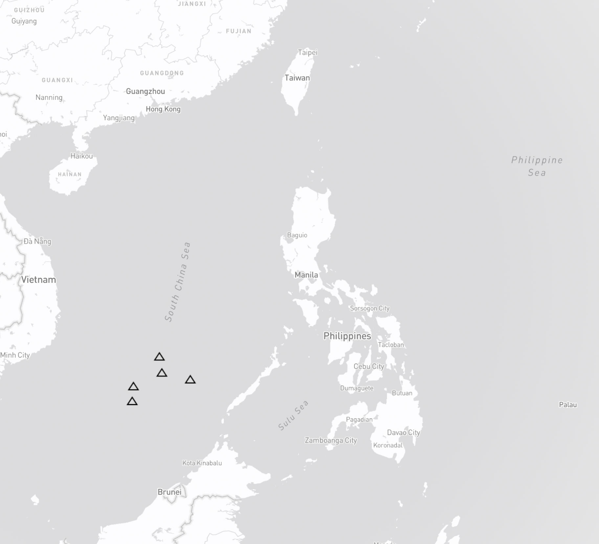
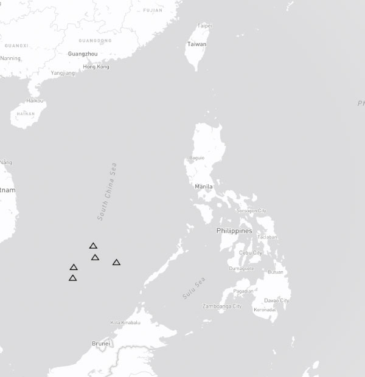

This is a map of the Philippines. The triangles show the Spratly Islands.
This is called the baseline. It is the line along the coast from which the seaward limits of a state's territorial sea and maritime zones of jurisdiction, such as the exclusive economic zone, are measured.
This line shows the exclusive economic zone. It extends 200 nautical miles from the baseline and gives the Philippines exclusive sovereign rights to explore and exploit the natural resources within it.
Meanwhile, this is the nine-dash line used by the Chinese Communist Party to claim all territories in the South China Sea.
In 2016, the international tribunal in The Hague ruled in favor of the Philippines and rejected China's all-encompassing line which it found to lack legal basis.
Nearly a decade after the Philippines won a landmark legal victory against China's territorial claims in the South China Sea, Beijing continues to militarize artificial islands in the area, raising concerns among its neighbors and the international community.
Satellite images from Google Earth Pro taken from 2014 and the present show the military facilities built by China on several reefs in the Spratly Island namely: Cuarteron Reef, Fiery Cross Reef, Gaven Reefs, Mischief Reef, and Subi Reef. China has built military facilities in these strategic areas including airstrips, radar systems, and missile launchers.

Cuarteron Reef known locally as Calderon reef is outside the Philippines' exclusive economic zone but within its continental shelf.
China's artificial island now covers 22.7 hectares of Calderon reef and includes a high-frequency radar which monitors surface and air traffic across the southern portion of the South China Sea.
Fiery Cross Reef known locally as Kagitingan Reef is a submerged feature just outside the Philippines' exclusive economic zone but within its continental shelf.
In 1987, China erected a weather station on Fiery Cross Reef to help UNESCO's global oceanic survey, only to transform it into a military outpost with a 3-kilometer airstrip.
Gaven Reef known locally as Burgos reef is a low-tide elevation located 354 nautical miles west of Palawan. It is just outside the Philippines' exclusive economic zone but within its continental shelf.
China has reclaimed 13.6 hectares of land on Gaven Reef and built a small garrison and a structure that may be an anti-aircraft tower.
Mischief Reef known locally as Panganiban reef is a low-tide elevation within the Philippines' exclusive economic zone. Under UNCLOS, only the Philippines can exploit its natural resources or erect structures.
In 1995, China built octagonal huts on Mischief Reef which it claimed to be shelters for fishermen. Now it is one of the most militarized features in the Spratlys with missile arsenals, aircraft hangars, radar systems and other military facilities.
Subi Reef known locally as Zamora Reef is a low-tide elevation outside of the Philippines' exclusive economic zone but within its extended continental shelf. Under UNCLOS, only the Philippines can erect structures or create artificial islands on this reef.
China seized Subi Reef in 1988 and created a 394-hectare artificial island containing a 3-kilometer airstrip and a seaport.
China's actions in the South China Sea have been met with criticism from the international community. But the underlying consequence of China's militarization of the islands is on the marine environment. A 2023 study by the Asia Maritime Transparency Initiative and the China Ocean Institute shows the ecological damage wrought by island building, giant clam harvesting, and overfishing.
- Over 2,500 hectares of coral reef have been destroyed in the South China Sea
- An additional 6,617 hectares were damaged by giant clam harvesting by Chinese fishers
- While fisheries in have been overexploited with fish catch stagnating since the 1990's